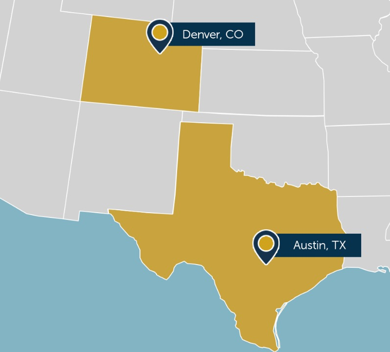
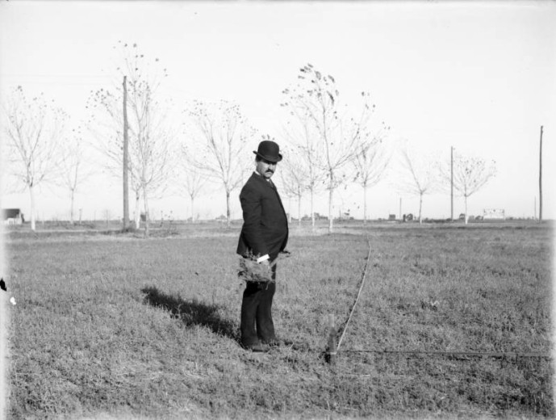

Forest Vision
For two decades, advocates have promised that putting a dollar value on what trees do—cooling streets, filtering air, storing carbon—would finally bridge science, policy, and public opinion and usher in smarter urban forests. My thesis, Forest Vision, went looking for that revolution in two fast-growing cities, Austin and Denver. I expected to find foresters steering decisions with ecosystem-services software like the U.S. Forest Service’s i-Tree. I was wrong.

Across fifteen in-depth interviews with municipal foresters and nonprofit staff—plus close readings of city codes, meeting minutes, technical specs, and public reviews—I found that professionals were largely ambivalent toward these metrics, and often ignored them entirely, even where the data was free and pre-computed.
Crucially, neither Denver nor Austin was forested before white settlement. Denver sits in the Western High Plains ecoregion—historically shortgrass prairie—and is semi-arid, receiving only about thirteen inches of rain a year. Austin lies on a transition zone between humid-subtropical and semi-arid climates, and much of it, including the entire eastern half of the city, was historically grassland rather than forest. Across much of the United States trees regenerate on their own; but in cities set in former prairie, the urban forest is almost entirely a product of human planting—which makes canopy costly to establish and hard to keep. In Denver’s arid climate, transplanted trees struggle to take hold and cramped downtown planting beds hold too little soil moisture to sustain them; in Austin, hot, dry summers, recurring droughts, sudden cold snaps, and pests kill young trees faster than any naturally regenerating forest would replace them.

The argument
Why do the metrics go unused? I offer two explanations. First, expressing a tree’s benefits in dollars invites its costs to be priced the same way—and that calculus often doesn’t favor big trees near sidewalks and power lines. Second, there’s a mismatch between what the metrics can solve and the problems foresters actually face on the ground: cramped rights-of-way, shrinking soil volumes, and development that outpaces planting. The metrics offer an answer to a question street-level foresters rarely need to ask.
But ignoring the metrics is not an escape from valuation. The city still prices trees through removal fees, funds forestry through mitigation payments, and sells trees as carbon credits. The numbers go unused, yet the logic of pricing trees keeps structuring how the urban forest is governed. The contribution is to show what critical-metrology theory looks like from the bottom up—in the hands of “street-level bureaucrats” who hold real discretion and can simply decline to use the tools handed to them.
Why it matters
The work sits at the intersection of environmental science, science-and-technology studies, and public administration. It’s a caution against assuming that better environmental data automatically produces better environmental decisions—and an argument for paying attention to the people whose everyday discretion decides whether a tool ever gets used at all.